Чек, пожалуйста.
Ложка — дневник питания, где у каждой калории есть чек: продукт, граммы и откуда взялась цифра. Найдите блюдо, отсканируйте штрихкод или скажите вслух.
- Бесплатно
- Без рекламы
- Без регистрации
Версия 0.24.0 от 25 ноября 2026 · Android 7 и новее · 59 МБ. Для старых 32-битных телефонов — другой файл.
ИСТОЧНИК: USDA FoodData Central
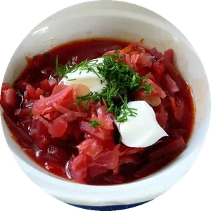
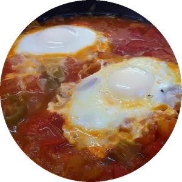
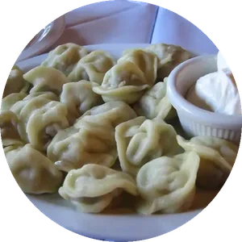
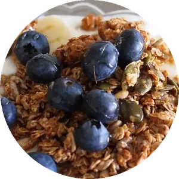
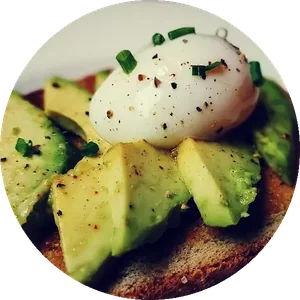
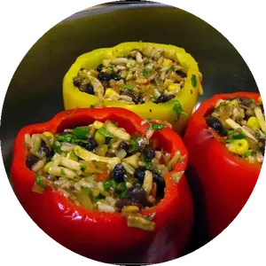
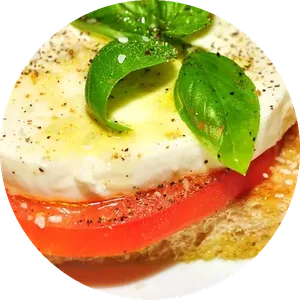
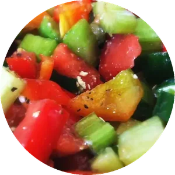
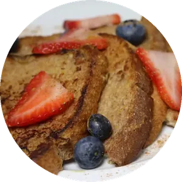
Чек на завтрак — за 4 касания
2 яйца — «+», первый результат, мера «яйцо С1», «Добавить». И в дневнике чек: 2 × яйцо С1 ≈ 106 г, 152 ккал.
«+» у завтрака
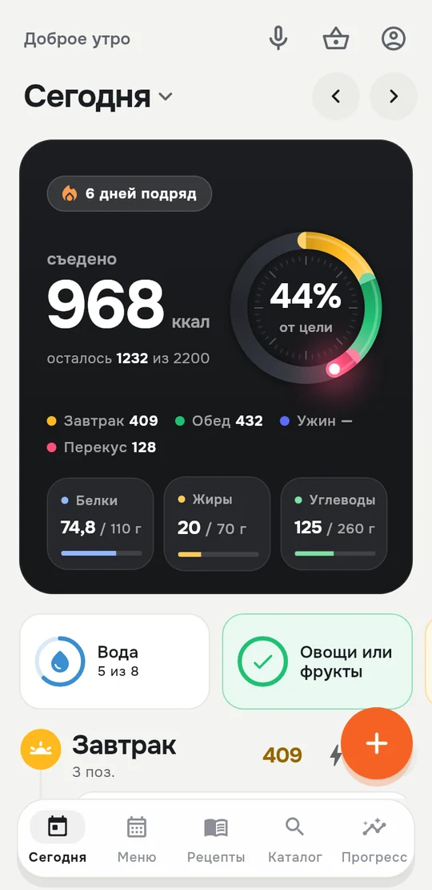
Первый результат
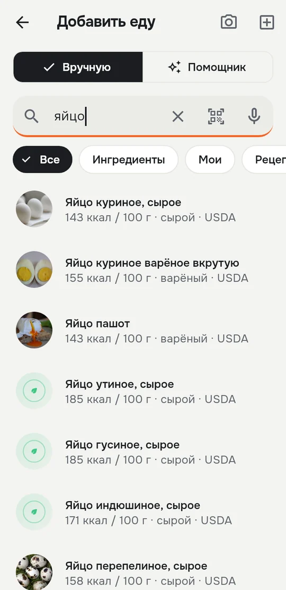
Мера «яйцо С1»
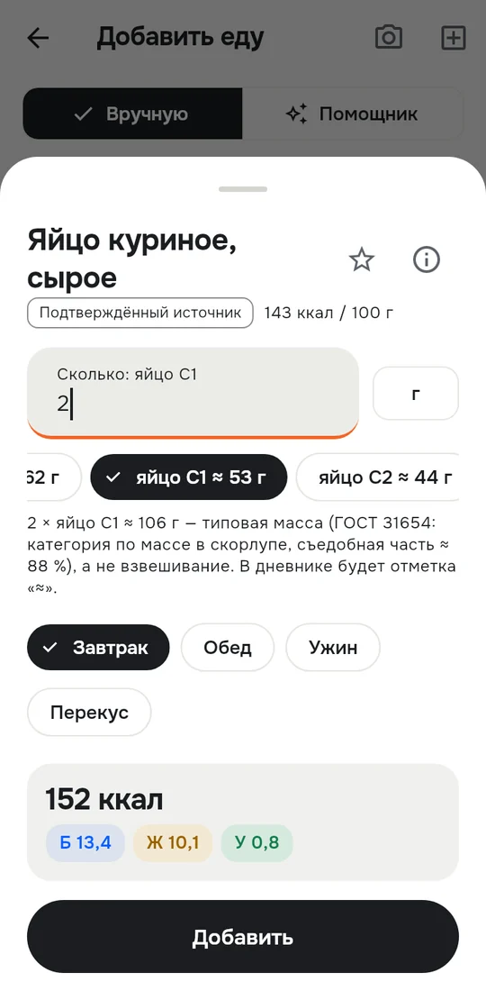
«Добавить»
✓ Яйцо куриное, сырое: 106 г → завтрак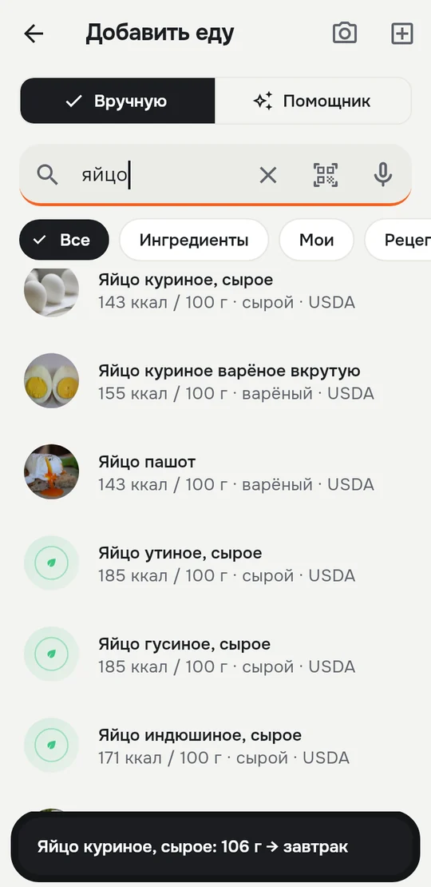
Плюс ввод «яйцо» и «2». Касания посчитаны тестом приложения, который проходит задачу «глазами новичка» по видимым надписям.
Весов нет? Считайте привычными мерами
Яйцо, ложка сметаны, стакан молока — Ложка переведёт в граммы по типовой массе и честно поставит «≈». Взвесили — введите граммы, и «≈» исчезнет.
Четыре способа записать еду
Каждый заканчивается одинаково: вы видите продукт и граммы и сами нажимаете «Добавить». Без вас ничего не записывается.
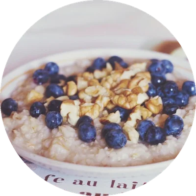
У каждой цифры есть чек
Нажмите на любое блюдо — и увидите, как получилось число: продукт, граммы, калории на 100 г и источник.
Источник строк — USDA FoodData Central. Округление только в конце.
Примерно — значит примерно
Мера, оценка по фото или типовая порция помечаются знаком «≈». Взвешенные граммы — без него.
«Нет данных» — не ноль
Если у продукта неизвестен сахар или соль, Ложка не подставит 0. В итогах дня появится «≥»: на деле может быть больше.
Сметана 10 % и 20 % — разные продукты
Жирность и состояние (сырое, варёное, сухое) учитываются. Две ложки сметаны, 50 г:
Прошлое не переписывается
Исправили цифры продукта — старые записи остаются как были. Пересчитать можно только по вашему решению, с отменой.
Что внутри Ложки
Справочник, товары и рецепты лежат в самом приложении — поиск работает даже в самолёте.
464 рецептов, к которым вы привыкли
Плов, бешбармак, манты, борщ, сырники — с калориями на порцию и готовкой по шагам. Замените ингредиент — пересчёт сразу.

Готовка по шагам
Крупный текст, таймеры, экран не гаснет.
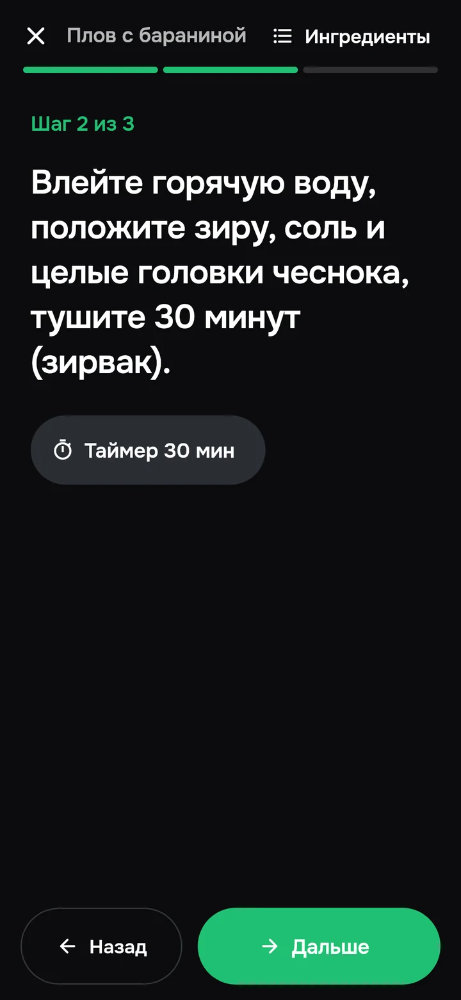
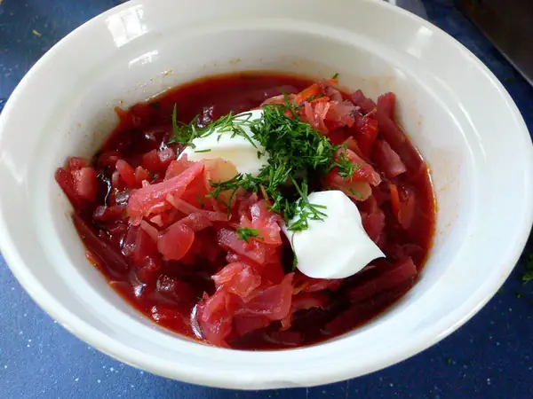

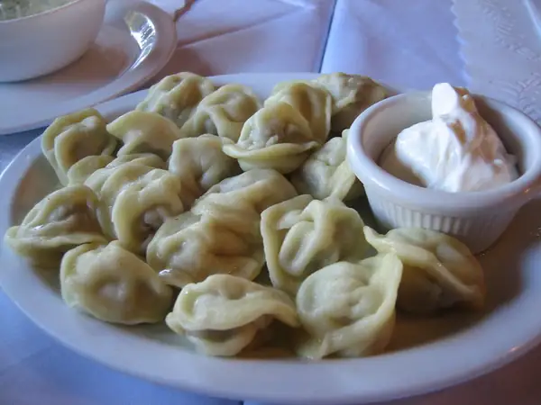

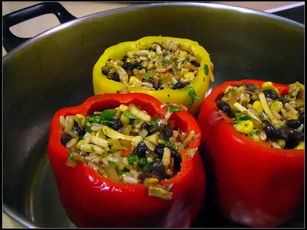

У 313 рецептов — фото именно этого блюда, с автором и лицензией. У остальных фото пока нет: чужое блюдо вместо настоящего мы не ставим.
Ваш дневник живёт в вашем телефоне
Аккаунт не нужен. В интернет Ложка обращается только для того, что перечислено справа, и почти всегда по вашей кнопке.
Без интернета
- Дневник, вес, прогресс и напоминания
- Поиск по 1 827 продуктам и 6 864 товарам со штрихкодом
- Рецепты, меню и список покупок
- Распознавание фото — после однократной загрузки нейросети
- Резервная копия в файл, зашифрованная вашим кодом
Нужен интернет
- Поиск товара, которого нет в телефоне (Open Food Facts) — уходит только штрихкод
- Фото упаковки товара — по кнопке или если вы включили это в настройках
- Голос, если на телефоне нет русского пакета распознавания
- Загрузка нейросети для фото и обновления приложения
- Копия в Google Диск — только если вы её включили
Чек, пожалуйста.
Бесплатно. Без рекламы. Без регистрации. Установка — три шага.
Основной файл — 59 МБ, для 32-битных — 53 МБ. Не знаете, какой нужен? Берите первый — он подходит почти всем телефонам последних лет. Версия 0.24.0 от 25 ноября 2026.
- Скачайте файлОткройте эту страницу в Chrome на телефоне — не внутри Instagram — и нажмите «Скачать для Android».
- Разрешите установкуAndroid спросит, можно ли Chrome устанавливать приложения: «Настройки» → «Разрешить из этого источника». Защиту отключать не нужно.
- УстановитеНажмите «Установить». Если Play Защита предложит проверить — соглашайтесь. Новые версии Ложка предложит сама, записи сохранятся.
Подробности
Что нового в 0.24.0
- 0.24.0Меню ставит одну порцию на человека, а если её мало — второе блюдо; «Готовлю на семью» и остаток приготовленного «На завтра» без повторной закупки; пропуск дня и пауза меню с отменой. Новое: «Что приготовить?» — блюдо семье, детям, к ужину, быстро или из того, что есть дома. Вода в миллилитрах с напитками, шаги и занятия без двойного счёта. «Куплено» не теряется между неделями. Свои рецепты учитывают аллергены; меню ниже 1 200 ккал не составляется; этикетка в кДж больше не читается как ккал. Понятные ошибки с «Повторить», «Повторить вчерашний день».
Прошлые версии
- 0.23.3Легче читать: кнопки с белым текстом, цветные цифры на светлом фоне, ошибки и рамки полей стали контрастнее. На крупном системном шрифте (до 200 %) плитки привычек больше не обрезаются. Дата и плашка серии на «Сегодня» стали удобнее для пальца, TalkBack читает плитки «Достижений». Все 31 экран проверены по одному протоколу.
- 0.23.2Без интернета сканер больше не пишет «товара нет в базе» — честно говорит, что проверить не удалось. Правка своего продукта больше не стирает источник, состав и аллергены; видно, где ваши цифры отличаются от Open Food Facts, и есть история правок. Окно количества запоминает меру («2 яйца С1»).
- 0.23.1Проверили все фото: сняли те, где было другое блюдо или продукт не в том виде (варёная гречка показывалась сухой). Фото упаковки товара можно загрузить из Open Food Facts — по кнопке, уходит только штрихкод. Ошибочную запись можно заменить другим продуктом, не удаляя. Рецепт, открытый из «+» у обеда, записывается в обед. Подсказки при первом открытии сканера, голоса и фото и раздел «Помощь» в настройках.
- 0.23.0Еду можно записывать мерой: «2 яйца С1», «ложка сметаны», «стакан молока» — с отметкой «≈», точный вес по-прежнему можно ввести. Голос: дольше ждёт конца фразы и умеет «Дописать». Сканер подсказывает, если код не считывается. Если данные продукта изменились, прошлую запись можно пересчитать — только по вашему решению, с отменой. Убраны фото, на которых было другое блюдо.
- 0.22.3Фото у 63 новых рецептов — подобраны вручную, на каждом именно это блюдо, автор и лицензия указаны. У остальных новых блюд фото пока нет: подходящих свободных снимков не нашлось.
- 0.22.2Ораза: напоминания о сухуре и ифтаре — только во время, которое вы задали сами (раньше по умолчанию стояло 8:00). Поиск точнее: ищет с начала слова и не подсовывает похожее по буквам. «Сообщить об ошибке»: текст обновляется при наборе, черновик не теряется. Быстрый набор продуктов можно отменить одним касанием. Калории в «Своём блюде» считаются так же, как при записи в дневник.
- 0.22.1«Сообщить об ошибке» с категориями и черновиком без интернета. Блюда из библиотеки находятся в поиске дневника. Серию дней и итоги недели можно отключить. У импортированных рецептов сохраняется источник. Честнее формулировка про аллергены: данные о составе блюд могут быть неполными.
Как проверить файл
Ложки пока нет в Google Play, поэтому Android покажет обычное предупреждение о файле не из магазина. Проверить файл можно так:
Антивирусы. Загрузите скачанный файл на VirusTotal — его проверят десятки антивирусов.
Отпечаток SHA-256. Основной файл: 0767373ab5a2399beb3ca1ddc69c6d8bc04a67e43bff92150e205954c81d0f3e. 32-битный: 0d41752ed8833090eb3b5429bf0907827ad52f97ee907ba413b60fd62ab94458
Подпись. Все версии подписаны одним ключом, сертификат 190abbfe3633ab9542c68699d2b9da0382ba888eb560e3db6313a3072ff964d8. Файл с другой подписью Android поверх установленной Ложки не поставит.
Какие разрешения просит и зачем
- Камера — штрихкод, этикетка и фото блюда, только по вашей кнопке
- Микрофон — голосовой ввод, только по кнопке микрофона
- Интернет — то, что перечислено в разделе «Нужен интернет»
- Установка приложений — новые версии Ложки, когда вы нажали «Обновить»
- Уведомления — напоминания, которые вы включили
- Биометрия — значится из-за защищённого хранилища Android для кода копии; отпечаток приложение не считывает